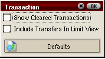

QashMoney
Welcome to QashMoney help. This file should help you get started
using QashMoney quickly!
Main Window
When you start the application, the Main Window will appear. This window
consists of account buttons and the account display which shows you the account
names and balances for each account. Parent accounts are to the left
and child accounts are indented. By default, child accounts contribute
to the balance of their respective parents. Parent accounts are used only for viewing
transactions for the child accounts beneath them as well as deleting and clearing/reseting
transactions in those child accounts. As such, parent accounts with child accounts will
not accept transactions.
NOTE: The columns in the account and transaction display windows default to a reasonable but
static width. You can press in between the columns and drag to resize them to your liking and QashMoney will remember
these widths.

 Press this button to add a new account to the list.
Press this button to add a new account to the list.
 Press this button to edit the name, description,
and currency that has been assigned to the account. The other parameters of the account are not editable.
Press this button to edit the name, description,
and currency that has been assigned to the account. The other parameters of the account are not editable.
 Press this button to delete an account that you've added. When you
delete a child account, all of its transactions will also be deleted so be careful with this. You can only delete a parent
account if it has no child accounts.
Press this button to delete an account that you've added. When you
delete a child account, all of its transactions will also be deleted so be careful with this. You can only delete a parent
account if it has no child accounts.
 Press this button to transfer money between accounts. This is a toggle button
and will stay down when you press it. Next, select two accounts from the account list. These will become the accounts
between which funds are transferred. The money is transferred from the account you tap first and transferred to the account you tap second.
A popup dialog will appear after you tap two accounts and looks like this:
Press this button to transfer money between accounts. This is a toggle button
and will stay down when you press it. Next, select two accounts from the account list. These will become the accounts
between which funds are transferred. The money is transferred from the account you tap first and transferred to the account you tap second.
A popup dialog will appear after you tap two accounts and looks like this:

To complete the transfer, enter the date and amount. Check the cleared check box to set this transfer cleared.
Add Account

Use the Add Account dialog to add accounts. The initial
balance may be typed in manually or you can push the calculator to enter
the amount with the stylus. Next, select the currency pulldown menu to choose
the currency for this account. If currency support is disabled, this box will be disabled.
You'll notice that the date line is disabled. Dates may only
be entered by pressing the calendar button and selecting the date. Today's date is put into the
calendar entry line by default. If you select this to a child account,
a pulldown menu will appear so you can select its parent account. Using the Type
pulldown menu, you may select any type of equity or liability account. If you choose a
liability account, you may also type in a credit limit for the account. Press the button next to
the account name box to enter a description of the account. To cancel the account addition,
click the X button. Otherwise, press OK to complete the account addition.
Transaction Window

To see the transactions for each account, highlight the
account and press the Transactions tab, this will display the transaction
window, the account name you've selected, the account balance and several
transaction buttons. If you've selected a child account or a parent account with no
children, the transaction window will contain three columns for date, transaction name,
and amount. A fourth column identifying the account for each transaction will be added
if you choose to view a parent account with children. Entering text in the "Limit" box will
display items that begin with the text in the box. Text in this box does not effect transfers.
New Transaction
Edit Transaction. Use this button to edit transactions.
Just select the transaction you want to edit and the appropriate window will appear. You cannot edit transfers
from this window (yet). You must delete transfers and then reenter them in the account display.
Delete Transaction. This also deletes a transfer if one is selected.
 Clear or Reset Transaction. Use this button to clear transactions.
If an uncleared transaction is selected, it will be cleared. If a cleared transaction is selected, it will be reset. This functions
identically for transfers. If you prefer not to see cleared transactions, the transaction you clear will disappear from the
transaction window. If however, you are showing cleared transactions, cleared transactions will appear red rather than black differentiating
them from the non-cleared transactions.
Clear or Reset Transaction. Use this button to clear transactions.
If an uncleared transaction is selected, it will be cleared. If a cleared transaction is selected, it will be reset. This functions
identically for transfers. If you prefer not to see cleared transactions, the transaction you clear will disappear from the
transaction window. If however, you are showing cleared transactions, cleared transactions will appear red rather than black differentiating
them from the non-cleared transactions.
 Transaction Information. If you've entered notes about a transaction, select the transaction and
press this button to see the notes.
Transaction Information. If you've entered notes about a transaction, select the transaction and
press this button to see the notes.
Add Transaction

Use this dialog to enter new transactions. Enter the transaction name, transaction number, amount, and date.
Each transaction defaults to a non-cleared debit transaction. If you want to clear the transaction right away, check
the Cleared checkbox. If you want to make this a deposit (credit) to the account, check the Credit checkbox. Press the
button next to Transaction Name to enter a description of this transaction. The budget and line item buttons at the bottom allow you to
add this transaction to budgets you have set up. The budget button defaults to None. If you don't want the add this transaction to
any budget, leave this as is. Otherwise, select the budget and then a line item from that budget to add the transaction. These buttons will
be disabled unless you've set up budgets.
Budgets

QashMoney's newest addition, this tab allows you to set up multiple budgets with different currencies then add any transaction from any account to any budget.
At the top of the budget display, a menu system allows you to add, edit, and delete budgets and line items within each budget. Using the Change item
under Date menu, you can change the date range for which you want to view budgets. Currently, you can view budgets by year and by month. The
budgeted and actual amounts will change appropriately for the view you select. Like the column sizes in the accounts and transaction windows. Drag these to
the size you want and QashMoney will remember them.
Preferences Menu
The preferences menus (currently) allow you to change the date format, determine whether cleared transactions are shown in the
transaction window, and to enable currenct support. Just tap the respective menu items to see the dialog for each preference. These dialogs are self explanatory
and look like this:



Defaults are provided for each preference.
Utilities Menu
Using the utlities menu and the memory window, you can add, delete, or edit memory items. These will be presented
in an easy to use pulldown menu when entering transactions.

New Memory Item. Press this button to add a new memory to the list.
This button is also used to add an edited item ( see below ).
Edit Memory Item. Select an item in the memory
item window then press this button to edit it. The item will be added to the line editor below the
button and deleted from the list. You must press the new button to add it back to
the list whether you edit it or not. Otherwise it will be lost.
Delete Memory Item. Press this button to delete a memory
item after selecting it in the memory item window.